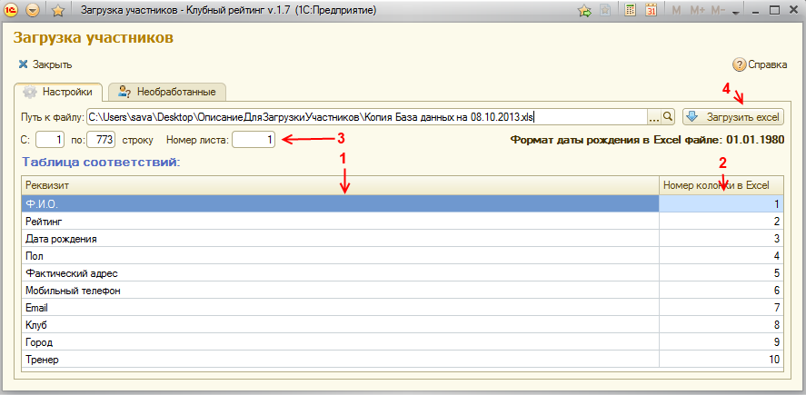
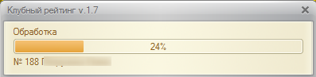
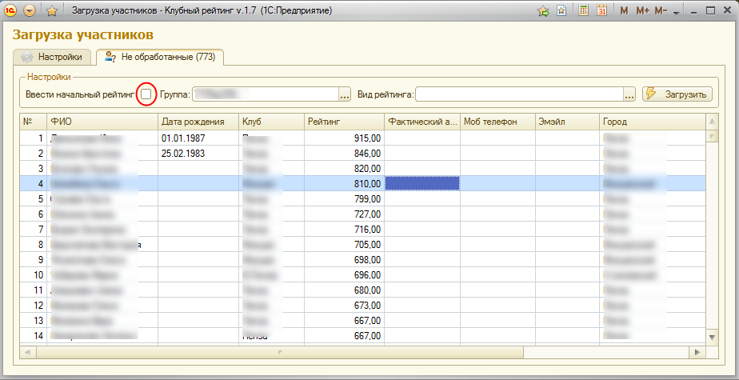
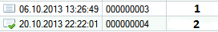

Рейтинг НЕ УЧИТЫВАЕТСЯ в базе (документ просто записан, кнопка:  Сохранить)
Сохранить)
Рейтинг УЧИТЫВАЕТСЯ в базе (документ проведен, кнопки: Провести и закрыть,  Провести)
Провести)
Программа «Загрузка участников» предназначена, для переноса участников из excel файла, с возможностью сразу завести начальный рейтинг для расчета в следующем соревновании. Автоматически создает в базе участников из данных загрузки.
1. Для того, что бы загрузить (перенести) участников, необходимо на первой вкладке «Настройки» задать соответствующие параметры.

1.1. Справочник «Участники» содержит различные данные по спортсменам, которые можно загрузить из имеющихся в файле. Для этого нужно установить соответствие колонок реквизитов и файла (2). Например: В excel файле в колонке 5, содержится Фамилия нашего участника, тогда в таблице соответствий, в строке с Ф.И.О. нужно установить номер колонки 5 и так далее со всеми колонками, которые хотим загружать. Если какие то данные не нужны, в Таблице соответствий эти строки можно удалить с помощью клавиши «Delete».
Если есть колонка пол в файле. То для автоматического определения необходимо что бы он был заполнен, например: Мужской или муж, регистр не имеет значения.
1.2. Первая строка и номер листа указывают, с какой строки excel файла будут загружаться данные, и с какого листа (название листа не играет роли).
Порядок действий будет выглядеть так:
1.2.1. Выбираем файл с данными (путь к файлу, на кнопку выбора с 3 точками).
1.2.2. Устанавливаем «Таблицу соответствий» с колонками excel файла.
1.2.3. Настраиваем с какой строки и по какую начинаются данные, и номер листа excel файла, с которого будут считываться данные.
1.2.4. Нажимаем кнопку «Загрузить excel». Начнется процесс загрузки участников в таблицу программы (еще не в базу).

2. Дальше переходим на вкладку «Необработанные». На этой вкладке содержатся загруженные данные из файла. В это время еще не было создано участников, клубов, городов не заведен рейтинг и так далее.

2.1. Настройки:
2.1.1. Ввести начальный рейтинг – после создания всех участников, будет автоматически создан документ «Начальный рейтинг» на текущую дату. Так же этот рейтинг будет автоматически введен в базу для участников.
2.1.2. Группа – можно выбрать, группу, куда будут записаны все участники из нижней таблицы.
2.1.3. Вид рейтинга – так же можно указать вид рейтинга, для участников и значений рейтинга. В документе «Начальный рейтинг» есть соответствующее поле, которое можно поменять в любой момент.
2.1.4. «Загрузить» - кнопка загрузить, загружает участников в базу из нижней таблицы и вводит начальный рейтинг при установленной галочки значения «Ввести начальный рейтинг».
2.2. Как должна быть заполнена таблица участников из файла:
2.2.1. ФИО – обязательна для заполнения, под таким именем будет создан участник в справочнике «Участники»
2.2.2. Дата рождения – лучше ее заполнить, во избежание проблем в будущем.
Если вы уверены, что у вас нет участников с одинаковым ФИО, тогда можно не заполнять. В будущем ее можно будет заполнить в справочнике «Участники».
2.2.3. Клуб – не обязателен для заполнения.
2.2.4. Рейтинг – если вы собираетесь сразу вводить начальный рейтинг, тогда это поле обязательно для заполнения (пустое поле значит, рейтинг равен 0).
2.2.5. Все остальные поля по вашему усмотрению, во всех excel файлах я почти не встречал данных по этим полям (Адрес, email, телефон и так далее). Все эти поля можно будет заполнить потом в справочнике «Участники» и так далее.
3. После нажатия кнопки «Загрузить», будут созданы участники исходя из данных заполненных в таблице, и если установлена галка «Ввести начальный рейтинг», будет создан документ «Начальный рейтинг» на текущую дату со значением из колонки «Рейтинг».
4. Документ «Начальный рейтинг» имеет два состояния:
